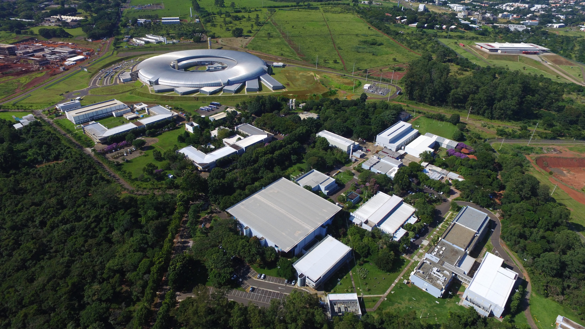
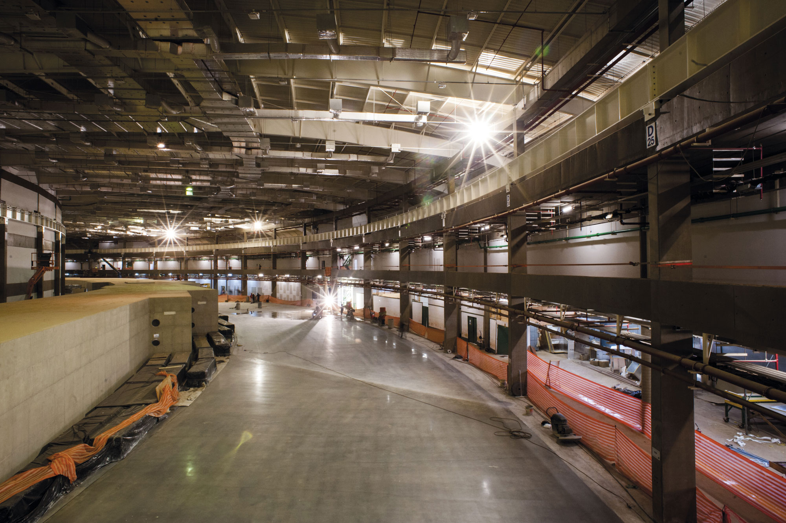

Com entrada gratuita, e duração especulada de aproximadamente 6 horas (09 às 15 horas), a visitação para o público geral será apenas no dia 30. A circulação é livre por todo o campus, com disponibilidade de cantinas, banheiros, salas e o mais esperado, o acelerador de partículas, Sirius.

O CNPEM abriga um ambiente científico de fronteira, multiusuário e multidisciplinar, com ações em diferentes frentes do Sistema Nacional de CT&I. É impulsionado por pesquisas que impactam as áreas de saúde, energia, materiais renováveis e sustentabilidade.

Aproveitando o gancho, vamos apresentar o Sirius, a maior realização do instituto! O Sirius é um dos aceleradores de partículas mais avançados do mundo e funciona como um “supermicroscópio” capaz de revelar estruturas invisíveis dos átomos. Ele acelera elétrons a velocidades próximas à da luz, onde ímãs desviam sua trajetória e fazem com que emitam a chamada luz síncrotron.

As atividades de pesquisa e desenvolvimento do CNPEM são realizadas por seus Laboratórios Nacionais de: Luz Síncrotron (LNLS), Biociências (LNBio), Nanotecnologia (LNNano) e Biorrenováveis (LNBR), além de sua unidade de Tecnologia (DAT) e da Ilum Escola de Ciência, curso de bacharelado em Ciência e Tecnologia:
Uma experiência única
O Ciência Aberta permite conhecer de perto como a ciência funciona na prática, com acesso a laboratórios e pesquisadores. Você pode explorar tecnologias reais, entender pesquisas e descobrir como a ciência impacta o dia a dia.
Para estudantes, é uma oportunidade de inspiração e contato direto com o ambiente científico. O CNPEM atua em áreas como saúde, energia e materiais, sendo referência nacional em pesquisa científica.
Visite o CNPEM
Inscreva-se e conheça de perto um dos maiores centros científicos do Brasil.
Quero visitar